Start with the points. Then choose the right formula.
We will take this slowly. First, we will read a point and revisit Pythagoras. Then we will learn distance, midpoint, gradient and the equation of a line—one at a time.
Read the x-value first. It tells you how far to move left or right. Then read the y-value. It tells you how far to move down or up.
Always read x first, then y.
Let us read A(3, 2)
The x-value is 3, so move 3 places to the right.
The y-value is 2, so move 2 places up.
Mark the point. That is A(3, 2).
For B(-2, 4), move 2 places left and 4 places up. A minus sign simply changes the direction.
Pythagoras: finding a missing side
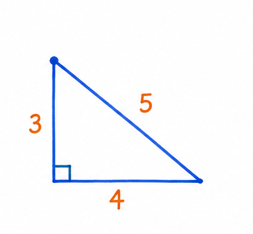
The little square marks the 90° angle. The side opposite it is the longest side.
Pythagoras works only with a right-angled triangle. It connects the two shorter sides to the longest side.
Pythagoras formula
a² + b² = c²
athe first shorter side
bthe second shorter side
cthe longest side, opposite the 90° angle
The small 2 means “multiply the number by itself”. For example, 4² = 4 × 4 = 16.
Basic example 1
Find the longest side
Question: The shorter sides are 3 cm and 4 cm. Find the longest side, c.
Teacher solution
Write the formula: a² + b² = c².
Put in 3 and 4: 3² + 4² = c².
Square and add: 9 + 16 = 25, so c² = 25.
The positive number whose square is 25 is 5. Therefore, c = 5 cm.
Basic example 2
Find a shorter side
Question: The longest side is 13 cm and one shorter side is 5 cm. Find the other shorter side, b.
Teacher solution
Start with 5² + b² = 13².
Work out the squares: 25 + b² = 169.
Subtract 25: b² = 144.
The positive number whose square is 144 is 12. Therefore, b = 12 cm.
1. Distance between two points
Distance is Pythagoras on a coordinate grid. The change in x makes one short side of a right-angled triangle. The change in y makes the other.
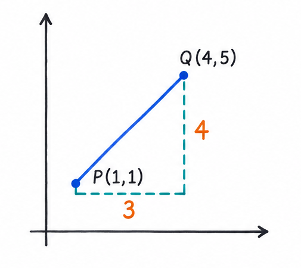
From P to Q: 3 across and 4 up. Pythagoras gives the direct distance.
Distance formula
AB = √((x₂ - x₁)² + (y₂ - y₁)²)
A, Bthe two endpoints
(x₁, y₁)the coordinates of A
(x₂, y₂)the coordinates of B
ABthe distance we are finding
Subtract the x-values. Subtract the y-values. Square both answers, add them, then take the positive square root.
Worked example 1
A distance that is a whole number
Question: P is (1, 1) and Q is (4, 5). Find PQ.
Teacher solution
The x-change is 4 - 1 = 3. The y-change is 5 - 1 = 4.
PQ = √(3² + 4²).
PQ = √(9 + 16) = √25.
PQ = 5 units.
Worked example 2
Distance with negative coordinates
Question: A is (-3, 4) and B is (5, -2). Find AB.
Teacher solution
The x-change is 5 - (-3) = 8. Subtracting a negative gives addition.
The y-change is -2 - 4 = -6.
AB = √(8² + (-6)²) = √(64 + 36).
AB = √100 = 10 units.
2. Midpoint of two points
The midpoint is exactly halfway between two endpoints. Average the two x-values, then average the two y-values.
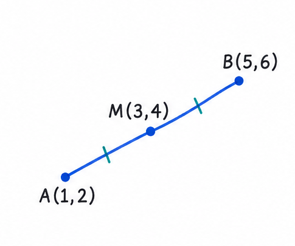
The matching marks show that AM and MB have the same length.
Midpoint formula
M = ((x₁ + x₂)/2, (y₁ + y₂)/2)
Mthe midpoint
x₁, x₂the two x-values to average
y₁, y₂the two y-values to average
÷ 2divide each total by 2 to find halfway
The first part of the answer is the average x-value. The second part is the average y-value. Keep them in that order.
Worked example 3
Find a midpoint
Question: A is (1, 2) and B is (5, 6). Find midpoint M.
Teacher solution
Average the x-values: (1 + 5)/2 = 3.
Average the y-values: (2 + 6)/2 = 4.
Put the answers back in (x, y) order: M = (3, 4).
Worked example 4
Find a missing endpoint
Question: M(-1, 4) is the midpoint of A(-5, 2) and B(x, y). Find B.
Teacher solution
Use the x-values: (-5 + x)/2 = -1. Multiply by 2: -5 + x = -2, so x = 3.
Use the y-values: (2 + y)/2 = 4. Multiply by 2: 2 + y = 8, so y = 6.
Therefore, B = (3, 6).
Check: the averages of -5 and 3, and of 2 and 6, are -1 and 4.
3. Gradient of a line
Gradient tells us how quickly a line goes up or down. Compare the vertical change with the horizontal change.
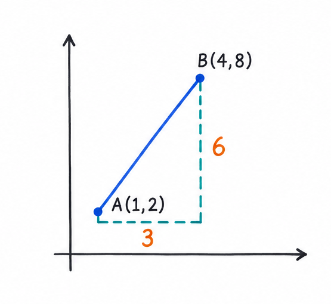
The line goes 6 up while it goes 3 across, so its gradient is 6 ÷ 3 = 2.
Gradient formula
m = (y₂ - y₁)/(x₂ - x₁)
mthe gradient
y₂ - y₁the vertical change: up or down
x₂ - x₁the horizontal change: across
Use the same order in both subtractions. If you begin with point 2 on top, begin with point 2 underneath too.
Four types of straight line
A gradient can be positive, negative or zero. A vertical line is the special case: its gradient is undefined because its horizontal change is zero, and we cannot divide by zero.
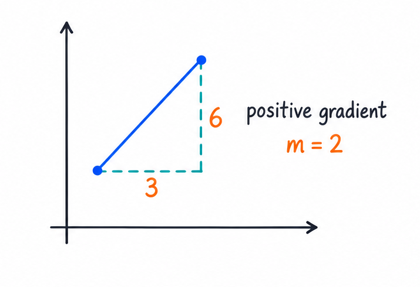
Positive gradient: the line rises from left to right. Here, 6 ÷ 3 = 2.
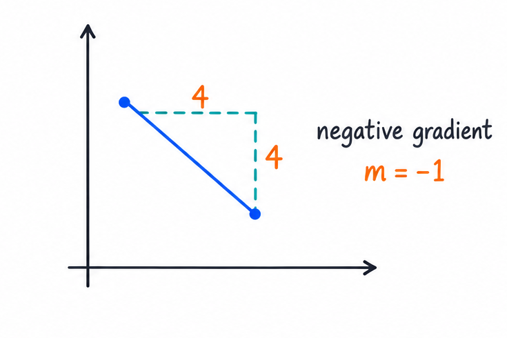
Negative gradient: the line falls from left to right. Here, -4 ÷ 4 = -1.
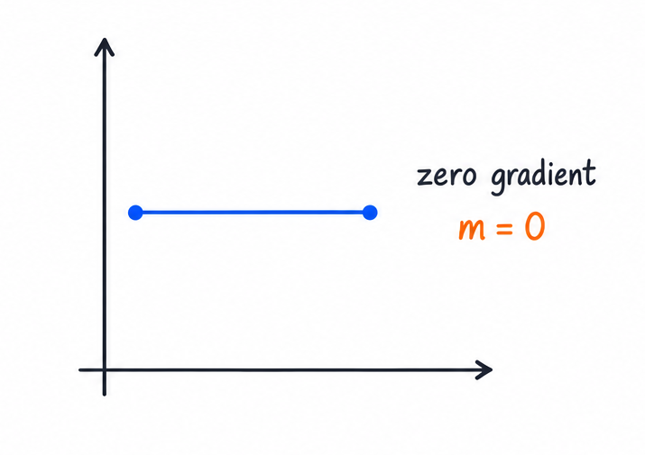
Zero gradient: y does not change. A horizontal line has an equation such as y = 3.
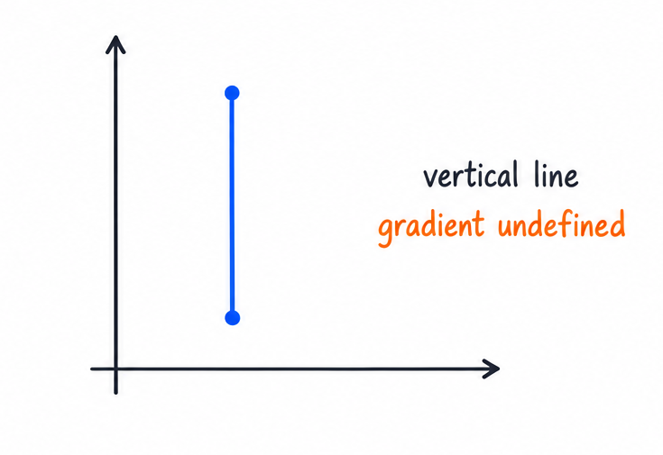
Undefined gradient: x does not change. A vertical line has an equation such as x = 2.
Worked example 5
A line that rises
Question: Find the gradient of the line through A(1, 2) and B(4, 8).
Teacher solution
Change in y: 8 - 2 = 6.
Change in x: 4 - 1 = 3.
m = 6/3 = 2.
The gradient is 2.
Worked example 6
A line that falls
Question: Find the gradient of the line through C(-2, 5) and D(4, -1).
Teacher solution
Change in y: -1 - 5 = -6.
Change in x: 4 - (-2) = 6.
m = -6/6 = -1.
The gradient is -1. The minus sign matches a line that falls from left to right.
Special case
A horizontal line
Question: Find the gradient through E(-2, 3) and F(4, 3).
The y-change is 3 - 3 = 0.
The x-change is 4 - (-2) = 6.
m = 0/6 = 0.
The gradient is 0. The line is horizontal and its equation is y = 3.
Special case
A vertical line
Question: Find the gradient through G(2, -1) and H(2, 5).
The y-change is 5 - (-1) = 6.
The x-change is 2 - 2 = 0.
The formula would ask us to calculate 6 ÷ 0. Division by zero is not possible.
The gradient is undefined. The line is vertical and its equation is x = 2.
4. Equation of a straight line
An equation describes every point on a line. To build it, we need one point on the line and the gradient.
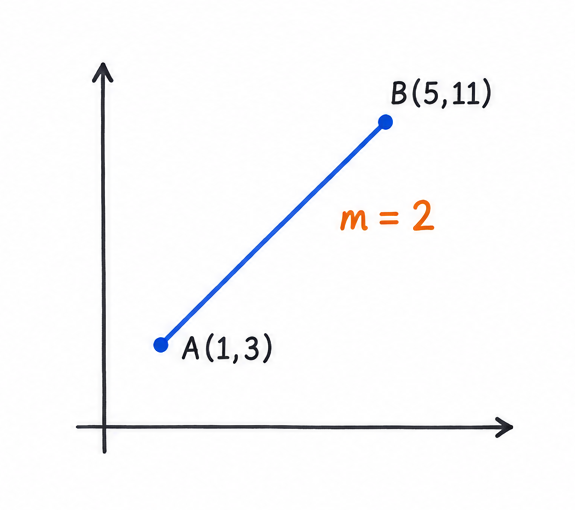
The points A and B give gradient 2. Either point can now be used in the formula.
Point-gradient formula
y - y₁ = m(x - x₁)
mthe gradient
(x₁, y₁)one known point on the line
(x, y)any other point on the same line
Put the known gradient and point into the formula. Then rearrange until y is by itself.
The final form of a line
y = mx + c
mthe gradient: positive rises, negative falls
cthe y-value where the line crosses the y-axis
x, ythe coordinates of any point on the line
How m and c change the line
Look at the sign and size of m first. Then look at c to see where the line crosses the y-axis.
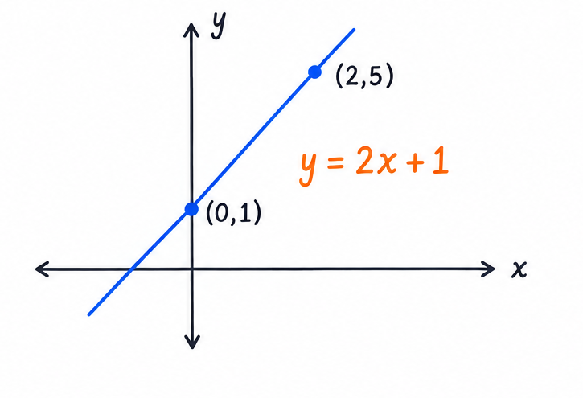
y = 2x + 1: m = 2, so the line rises steeply; c = 1.
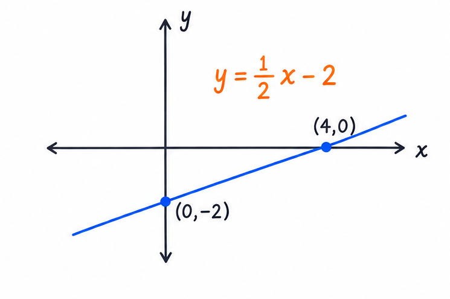
y = ½x - 2: m = ½, so the line rises gently; c = -2.
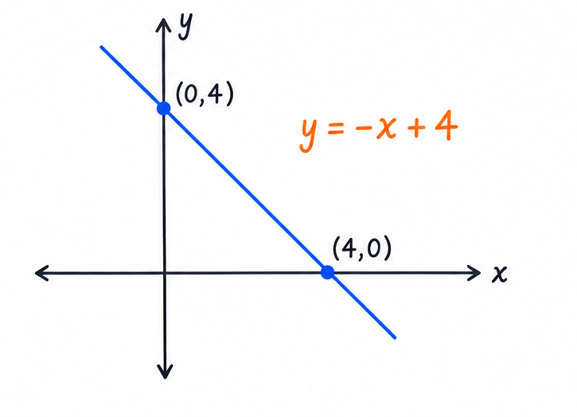
y = -x + 4: m = -1, so the line falls; c = 4.
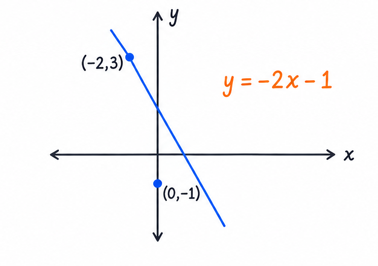
y = -2x - 1: m = -2, so the line falls more steeply; c = -1.
Worked example 7
Two points are given
Question: Find the equation of the line through A(1, 3) and B(5, 11). Give the answer as y = mx + c.
Teacher solution
First find the gradient: m = (11 - 3)/(5 - 1) = 8/4 = 2.
Use A(1, 3): y - 3 = 2(x - 1).
Open the bracket: y - 3 = 2x - 2.
Add 3 to both sides: y = 2x + 1.
Check with B: when x = 5, y = 2(5) + 1 = 11. The equation works.
Worked example 8
A point and gradient are given
Question: A line has gradient 3 and passes through (2, -1). Find its equation.
Teacher solution
Here m = 3, x₁ = 2 and y₁ = -1.
Put them into the formula: y - (-1) = 3(x - 2).
Simplify: y + 1 = 3x - 6.
Subtract 1: y = 3x - 7.
Check the given point: 3(2) - 7 = -1. The equation works.
Worked example 9
Negative gradient from two points
Question: Find the equation of the line through C(-2, 5) and D(4, -1).
Find the gradient: m = (-1 - 5)/(4 - (-2)) = -6/6 = -1.
Use C(-2, 5): y - 5 = -1(x - (-2)).
Simplify: y - 5 = -x - 2.
Add 5: y = -x + 3.
Check D: when x = 4, y = -4 + 3 = -1.
Worked example 10
Another negative-gradient line
Question: A line has gradient -2 and passes through (-1, 4). Find its equation.
Here m = -2, x₁ = -1 and y₁ = 4.
Put them into the formula: y - 4 = -2(x - (-1)).
Simplify: y - 4 = -2(x + 1).
Open the bracket and add 4: y = -2x + 2.
Check the point: -2(-1) + 2 = 4.
Quick check
A line has gradient -2 and passes through (1, 4). Which equation is correct?